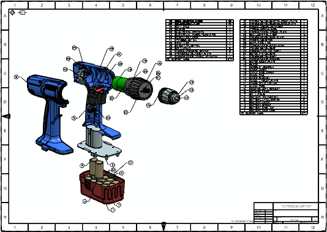

与单个部件文件相同，您可以直接在装配文件中创建图纸，也可以将装配作为主模型部件添加到非主图纸文件中。创建图纸之后，您可以使用制图工具在单独的图纸页中创建视图，并在视图中添加注释。
零件明细表将直接从该装配的组件中派生得出，无论图纸是在主模型部件或非主模型部件中创 建均是如此。尺寸、标签、符号以及其他辅助制图工具均完全与其所附组件中的几何体关联。因此，无论何时，只要修改引用的组件，装配图纸均会更新。类似地， 当编辑组件几何体时会保留依赖视图的图纸级修改。
|
注释 |
所有与视图相关的编辑都在顶级工作部件中进行。如果使用主模型策略，则这是非主图纸文件。类似地，任何添加到图纸页或图纸视图的 2D 几何体都在顶级工作部件中创建。 |
组件部件中的尺寸、制图注释和制图标签在使用此组件部件的装配中不可见。如果要在装配中显示组件级注释，请考虑使用 PMI。
